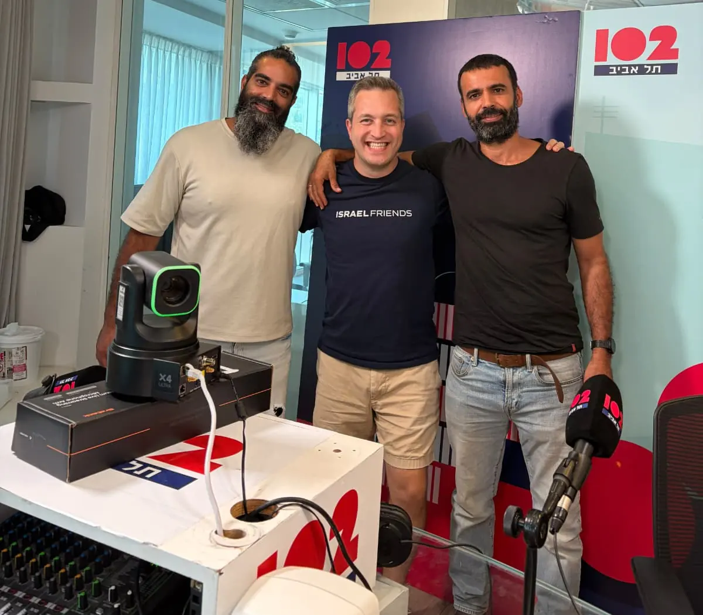

חברות וארגונים עסקיים
חברות הייטק, מפעלים, חברות גדולות, מחלקות משאבי אנוש, מנהלים וצוותים.
- חוסן ארגוני והתמודדות עם שחיקה
- חזרה לעבודה אחרי מילואים או משבר
- השפעת טראומה ואירועי חיים על עובדים ועל הארגון
- הרצאות, סדנאות ותהליכים לצוותים ולמנהלים
משאבי אנוש · מנהלים · חינוך · רווחה · קהילה
הרצאות, סדנאות ותוכניות לחברות, לגופים ציבוריים, למערכת החינוך והרווחה ולקהילות. כל פעילות מתחילה בשיחה קצרה על מה שקורה אצלכם.

למי מיועדות ההרצאות, הסדנאות והתוכניות
חברות הייטק, מפעלים, חברות גדולות, מחלקות משאבי אנוש, מנהלים וצוותים.
משרד הביטחון, אגפי שיקום, גופים ציבוריים, רשויות מקומיות ומסגרות העוסקות בטיפול, בשיקום ובתמיכה במשפחות.
ספק של משרד הביטחון
בתי ספר, מסגרות לנוער בסיכון, צוותי חינוך, שירותים חברתיים, מחלקות רווחה ומסגרות קהילתיות.
קיבוצים, יישובים, מרכזים קהילתיים, קבוצות הורים, קבוצות נשים וגברים ומסגרות משפחתיות.
זו בדיוק התקופה שבה מחלקות משאבי אנוש, רווחה והדרכה בונות את התקציבים ואת התוכנית לשנה. אפשר לתכנן כבר עכשיו הרצאה, סדנה או תהליך שלם, ולשריין תאריכים מראש.
לצפייה ולהאזנה
בונים פעילות יחד
שיחה קצרה מספיקה כדי להבין מי הקבוצה, מה הצורך ואיזה פורמט מתאים. משם בונים הרצאה, סדנה או תהליך.